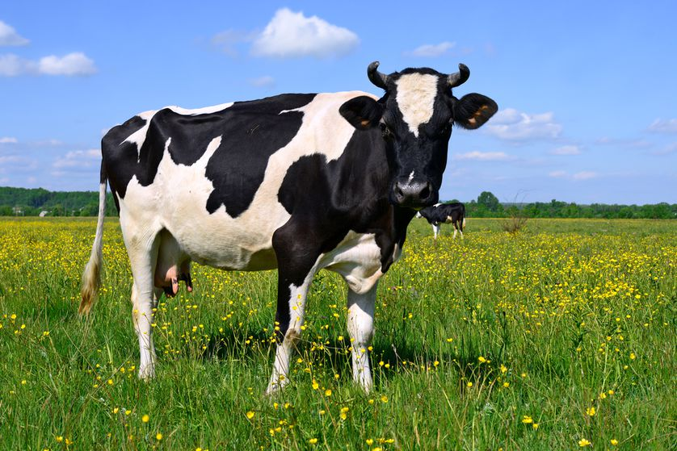

Food is any substance consumed to provide nutritional support for the body. It is usually of plant or animal origin and contains essential nutrients such as fats, protiens, vitamins or minerals.
Fruit
Vegetables

Poultry